DC System Modelling¶
DC node¶
{kind=link}
DC node equivalent circuit¶
{kind=link}

DC node equivalent circuit¶
The AC node is modeled using voltage \(U_d\) where [1]:
\(U_d\) is the voltage magnitude in pu
\(P_{rg}\) is the active power injection of renewable generation in pu
\(P_{cn}\) is the active power injection of converter in pu
\(P_l\) is the active power demand in pu
Class Reference: pyflow_acdc.Classes.Node_DC
- class Node_DC(node_type, kV_base, Voltage_0=1, Power_Gained=0, Power_load=0, name=None, Umin=0.95, Umax=1.05, x_coord=None, y_coord=None)¶
DC bus in the network.
- Parameters:
node_type (str) – Bus type:
'Slack','P','Droop', or'PAC'(stored astype).kV_base (float) – Base voltage in kV.
Voltage_0 (float, optional) – Initial voltage magnitude in pu (stored as
V_ini).Power_Gained (float, optional) – Active power injection in pu (stored as
PGi).Power_load (float, optional) – Active power demand in pu (stored as
PLivia load factors).name (str, optional) – Bus identifier.
Umin (float, optional) – Minimum voltage magnitude in p.u.
Umax (float, optional) – Maximum voltage magnitude in p.u.
x_coord (float, optional) – x-coordinate, preferably in longitude decimal format.
y_coord (float, optional) – y-coordinate, preferably in latitude decimal format.
- price¶
Nodal energy price when the bus belongs to a price zone.
- Type:
float
- PLi_factor¶
Time-series/scenario load scaling factor.
- Type:
float
- PLi_inv_factor¶
Investment-period load scaling factor.
- Type:
float
- Example Usage:
import pyflow_acdc as pyf # Create an DC node node = pyf.Node_DC('P', 1, 0,0,525,name='Bus1')
DC line¶
{kind=link}
DC line model¶
{kind=link}
DC line model¶
Class Reference: pyflow_acdc.Classes.Line_DC
- class Line_DC(fromNode, toNode, r=0.001, MW_rating=9999, km=1, polarity=Polarity.MONOPOLAR, name=None, N_cables=1, Cable_type=CableType.CUSTOM, S_base=100)¶
DC transmission line or cable.
- Parameters:
fromNode (Node_DC) – Starting bus of the line.
toNode (Node_DC) – Ending bus of the line.
r (float, optional) – Resistance in pu.
MW_rating (float, optional) – MW rating of one cable.
km (float, optional) – Length of the line in km (stored as
Length_km).polarity (str, optional) – Polarity:
'm'(monopolar),'b'(bipolar), or'sm'(symmetric monopolar).name (str, optional) – Line identifier.
N_cables (int, optional) – Number of parallel cables (stored as
np_line).Cable_type (str, optional) – Cable type from the built-in database, or
'Custom'.S_base (float, optional) – Per-unit power base in MVA.
- Example Usage:
import pyflow_acdc as pyf # Create an AC node node1 = pyf.Node_DC('Slack', 1, 0,0,525,name='Bus1') node2 = pyf.Node_DC('P', 1, 0,0,525,name='Bus2') # In pu line_1 = pyf.Line_DC(node1, node2, r=0.01, MW_rating=100, N_cables=1, name='Line1') # Or by cable type in database line_2 = pyf.Line_DC(node1, node2, S_base=100, Length_km=100, Cable_type='NREL_HVDC_2000mm_320kV')
DC line expansion¶
{kind=link}
DC expansion model¶
{kind=link}
DC expansion model¶
The expanded branch object is inside the Line_DC class.
The expanded branch \(e\) is modelled as:
DCDC converter¶
{kind=link}
DCDC converter model¶
{kind=link}
DCDC converter model¶
The DCDC converter is modelled very simply, with the set power injected into the toNode and the power drawn from the fromNode.
To include losses there is a simple resistive model. For power flow calculations the power injected in either node is kept constant as the losses are pre calculated with the assumption of \(V_{to} = 1 pu\).
Class Reference: pyflow_acdc.Classes.DCDC_converter
Key attributes:
Attribute |
Type |
Description |
|---|---|---|
|
Node_DC |
The starting node |
|
Node_DC |
The ending node |
|
float |
Resistance of the converter |
|
float |
Power set point of the converter |
|
float |
Power rating of the converter |
|
str |
Name of the converter |
|
str |
Geometry of the converter |
- Example Usage:
import pyflow_acdc as pyf # Create an AC node node1 = pyf.Node_DC('Slack', 1, 0,0,525,name='Bus1') node2 = pyf.Node_DC('P', 1, 0,0,525,name='Bus2') conv = pyf.add_DCDC_converter(grid,fromNode , toNode ,Pset=0.1, r=0.0001, MW_rating=99999,name='DCDC1')
Inputs can be given in MW or pu. For pu use the r and Pset parameters. For MW use the R_Ohm and P_MW parameters.
References